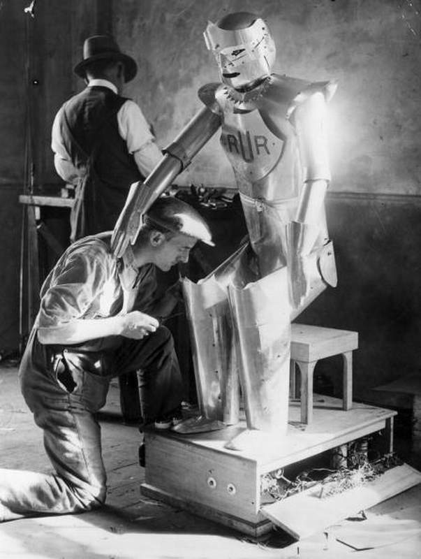

Estrategias para la exploración coordinada multi-VANT
Maestría en Ciencias en Ingeniería y Tecnologías Computacionales
Ingeniería Computacional

Alumno: Luis Alberto Ballado Aradias
Asesores:
Dr. José Gabriel Ramírez Torres
Dr. Eduardo Arturo Rodríguez Tello
Contenido
- Introducción
- Problemas en robótica
- Information Path Planning
- Exploración
ro-bot /'rō,bät, 'rōbǝt/
- Checo 'robota'
- Trabajo forzado
- Polaco 'robotnik'
- Trabajador

Robots Universales Rossum
Karel Čapek en 1920


¿En que año un carro autónomo completo un recorrido de 20km?
1987 Ernst Dickmanns - Universität der Bundeswehr München
Robótica
Tipos de robots
- Industriales (Fijos)
- Servicios (Móviles)


Paradoja de Moravec
“Lo que es fácil para un robot es difícil para un humano y lo que es fácil para los humanos es difícil para un robot.”
Contenido
- Introducción
- Problemas en robótica
- Information Path Planning
- Exploración


Contenido
- Introducción
- Problemas en robótica
- Information Path Planning
- Exploración
Informative Path Planning (IPP) ★
Encontrar un camino que maximice la ganancia de información respecto a ciertas limitantes.
Insertar equation aqui
- Inspecciones de estructuras
- Monitoreo ambiental
- Búsqueda y rescate
- Reconstrucción 3D
- Agricultura de presición
- Exploración
Contenido
- Introducción
- Problemas en robótica
- Information Path Planning
- Exploración
Exploración
Dado a lo que sabes del mundo, ¿hacia dónde deberías moverte para obtener la mayor cantidad de información posible? ★
Exploración clásica en robotica:
Lo que queremos lograr:
- No cuenta con un modelo del ambiente
- No considera el beneficio a largo plazo de la exploración
Lo que queremos lograr:
- Exploración descentralizada
- Minimizar la duplicación de esfuerzos de exploración


Simuladores
- Rápidos
- Baratos
- Seguros

Exploración coordinada multi-VANT (Video 10x)
1 VANT
3 VANTs
2 VANTs
4 VANTs

¡Gracias!
https://luisballado.github.io
luis.ballado@cinvestav.mx